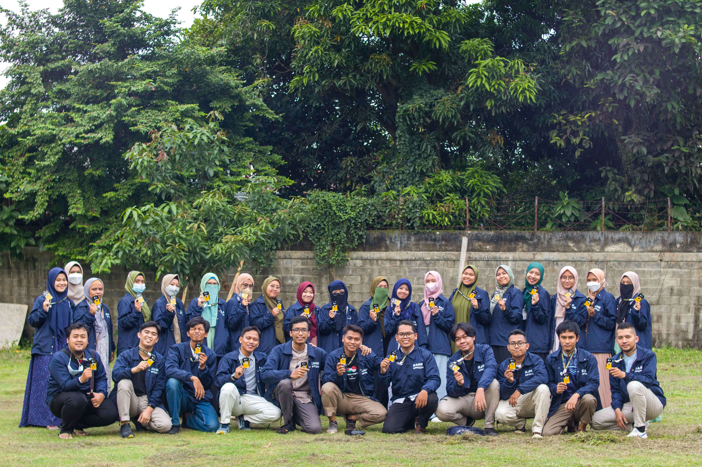
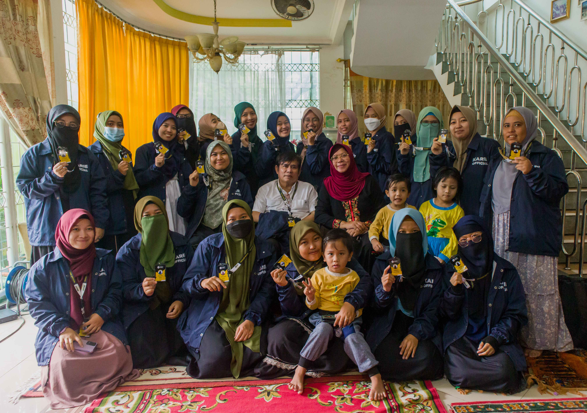

Divisi Syiar
- 


- 


Divisi Syiar dan Keilmuan ini adalah sarana dakwah para pemuda dan juga para tetuah dalam belajar perihal Agama Islam secara menyeluruh. Divisi Syiar dan Keilmuan juga berfungsi sebagai menebar hikmah, mengingatkan, dan menjaga. Serta berlandaskan pada Al-Quran, adanya divisi ini ditujukan untuk menebarkan ilmu seluas-luasnya baik dari segi Agama Islam maupun keilmuan, terkhusus untuk masyakarat yang berdomisili di Bumi Serpong Damai, Serpong, Tangerang Selatan.
Anggota
Kenalan dulu yuk sama anggota-anggota dari divisi Syiar nya KARIB


Program Kerja
Setiap divisi KARIB tentunya memiliki program kerja masing-masing agar tujuan nya dapat tercapai. Berikut ini adalah program dari divisi Syiar :
SMS Dhuha (Senang Mengaji Setelah Dhuha)
Merupakan program kerja yang menyajikan kajian rutin setiap hari Ahad yang dilaksanakan setelah Dhuha. Dilaksanakan setiap pekan dalam sebulan dengan petugas dari divisi tertentu setiap bulannya. Setiap bulan sekali, petugas akan dirolling ke divisi yang lain. Publikasi untuk promosi kegiatan SMS Dhuha dibuat dalam dua jenis, yaitu bentuk flyer bulanan (semua pemateri) dan flyer mingguan (per pemateri). Resume kajian setelah SMS Dhuha akan dibuat dalam bentuk postingan dan story Instagram (flyer/quotes) dengan bantuan dari divisi media. Konten flyer bulanan, bisa bersumber dari isi surat izin tempat yang dikirim ke media.
Rundown SMS Dhuha
- Pembukaan SMS Dhuha oleh MC
- Pembacaan tilawah dan asmaul husna (tentatif)
- Kajian inti oleh pemateri
- QnA
- Info-info tentang KARIB
- Penutup
Jadwal Rolling Petugas SMS Dhuha
- Syiar (Februari)
- PSDM (Maret)
- Sosial (April)
- Bisnis (Mei)
- Pengurus Inti (Juni)
- Bulan selanjutnya kembali ke urutan awal
Kajian Akhwat
Merupakan program kerja yang menyajikan kajian khusus untuk para akhwat dengan tujuan mengupgrade ilmu agama ataupun skill yang dilaksanakan setiap 2 bulan sekali dengan tema yang beragam.
Karib Talk Internal
Program kerja yang menyajikan wadah bagi anggota KARIB untuk berbagi ilmu, pengetahuan, atau cerita melalui diskusi ringan di dalam zoom (atau media lain) sesuai dengan bidang/keahlian/minat masing-masing. KARIB Talk ini dilaksanakan dua kali dalam satu bulan; di hari Selasa malam.
Kelas Keilmuan
Merupakan program kerja yang menyajikan kelas untuk sharing knowledge; tentang ilmu-ilmu yang dapat dipraktikan seperti kelas jurnalistik, public speaking, pelatihan design dan tadabbur al-Qur'an. Kelas ini diadakan dua pekan sekali setiap bulannya.
Tahsin Ikhwan
Program kerja ini merupakan wadah bagi anggota ikhwan KARIB untuk menguasai cara tepat membaca al-Qur'an dengan bimbingan Ustadz yang berkompeten di bidangnya. Tahsin Ikhwan akan dilaksanakan seminggu sekali.
Tahsin Akhwat
Program kerja ini merupakan wadah bagi anggota akhwat KARIB untuk menguasai cara tepat membaca al-Qur'an dengan bimbingan Ustadzah yang berkompeten di bidangnya. Tahsin akhwat akan dilaksanakan seminggu sekali.
MABIT ( Malam Bimbingan Iman dan Taqwa)
Mabit merupakan salah satu sarana pendidikan untuk membina ruhiyah, membersihkan jiwa, melembutkan hati dan fisik untuk beribadah. Program kerja ini berupa kegiatan bermalam di suatu masjid dan diisi dengan rangkaian kegiatan untuk meningkatkan ketaqwaan para peserta, seperti shalat berjamaah, dzikir/tadarus al-Qur'an, qiyamul lail, tafakkur/tadabbur dan kajian subuh. Kegiatan mabit akan dilaksanakan satu atau dua kali dalam setahun (kondisional tergantung kondisi) yaitu pada pertengahan tahun dan/atau akhir tahun di penghujung bulan Desember.